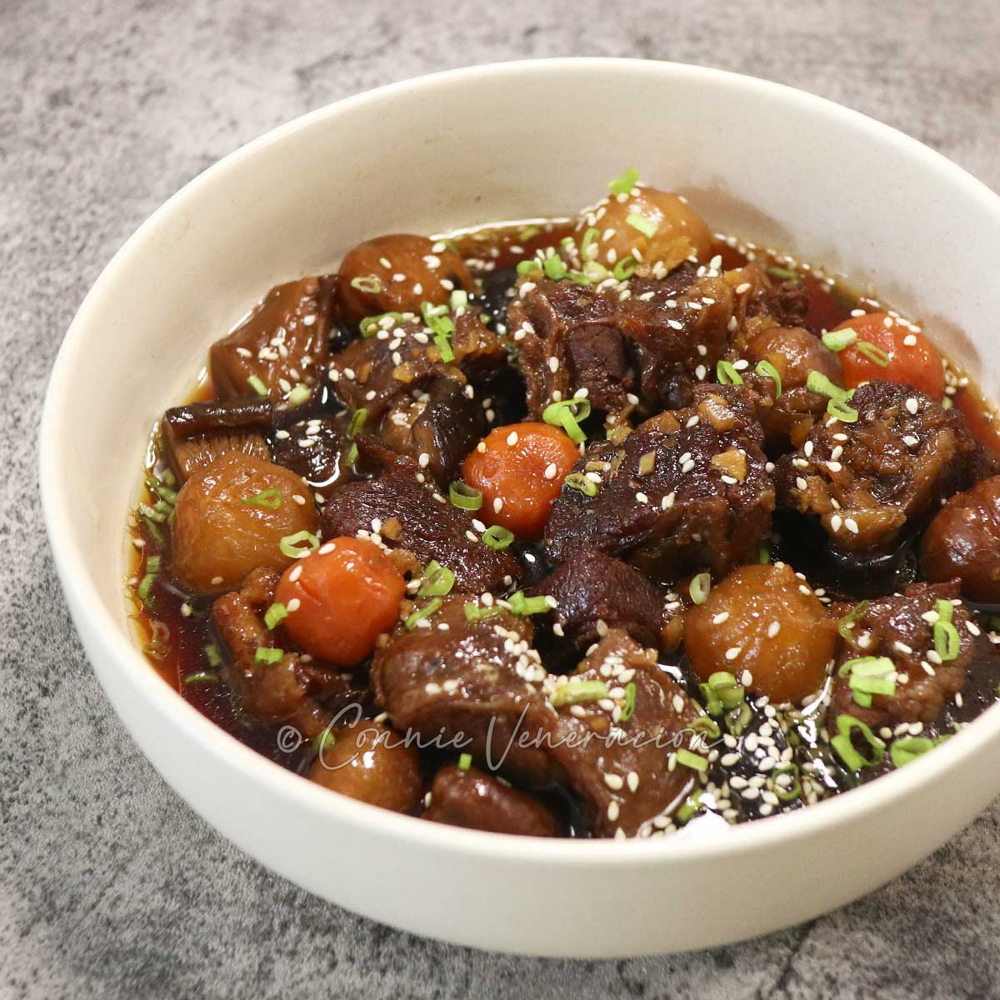

Galbi Jjim

Description
[DESCRIPTION GOES HERE]
Ingredients
- 3-4 lbs bone-in beef short ribs
- 2 carrots
- 10 gingko nuts, peeled
- 10 chestnuts, peeled
- 6 oz Asian pear
- 2 oz onion
- 6 tbsp soy sauce
- 2 tbsp brown sugar
- 2 tbsp honey
- 2 tbsp mirin
- 1 tbsp minced garlic
- 1 tsp sesame oil
- 5 whole black peppers
Steps
- Soak the beef ribs in cold water for 10 to 20 mins. This is to draw out the red liquid (which looks like blood) from the meat. Change the water a few times during this time.
- Blend the sauce ingredients in a mixer or food processor. Set it aside until needed.
- In a large pot, in rolling boiling water, boil the ribs for 6 to 8 minutes over medium high heat. Drain the water and rinse the ribs in cold running water. Cut off any obvious excess fat from the ribs.
- Place the ribs in a Dutch oven and pour the water in (1 & 1/2 cups). Add 2/3 of the sauce. Boil them over medium heat for about 30 mins, covered. Stir gently and change the position of the ribs. Reduce the heat to medium low and continue to simmer for about 10 minutes, covered.
- Add the remaining ingredients (carrots, jujube, gingko nuts, chestnuts and the remaining sauce) and continue to simmer it over medium low heat for about 20 mins, covered.
- By now the ribs should be fully cooked, but they may not be tender. Continue to simmer them over medium low heat until your desired tenderness is achieved. (I normally simmer it for an additional 1 hour, covered.) Depending on how long you simmered it, you may still have a reasonable amount of sauce/liquid left in the pot.
To boil it off, you can heat up the stove to medium high heat and boil it for 10 to 12 minutes, covered. This should thicken the sauce and leaves just the right amount of it at the bottom of the pot. Alternatively, you can continue to boil off the sauce over medium low heat until the sauce nearly disappears. (This can take another 1 hour or so. And this will make the meat off the bone. FYI, many Korean moms would say that the bones shouldn't fall off as it's visually less appealing when you serve it.)
- Serve galbi jjim hot with steamed rice and other Korean side dishes. To reheat, add 1/3 cup of water in a dutch oven and boil it for 5 to 7 mins over medium high heat, covered.
Home